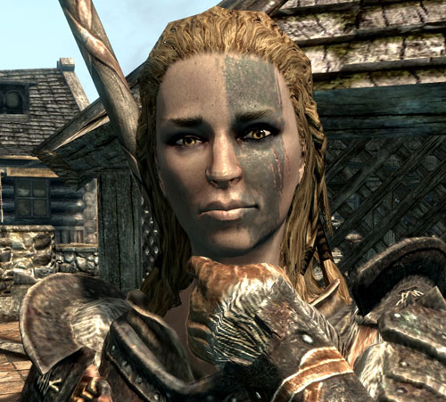
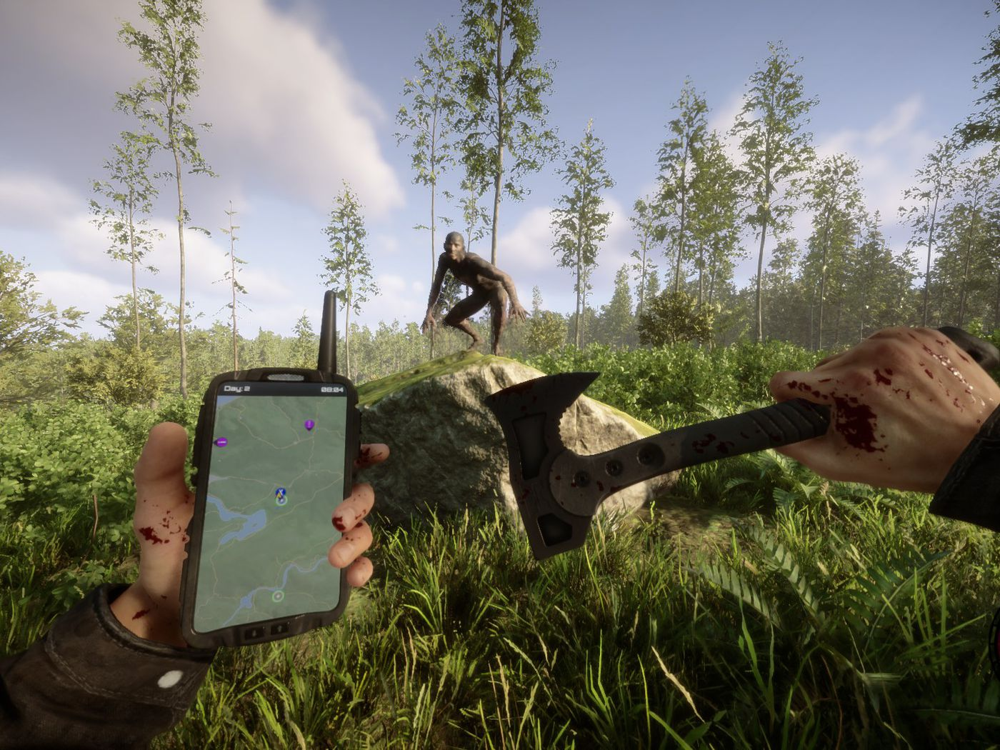
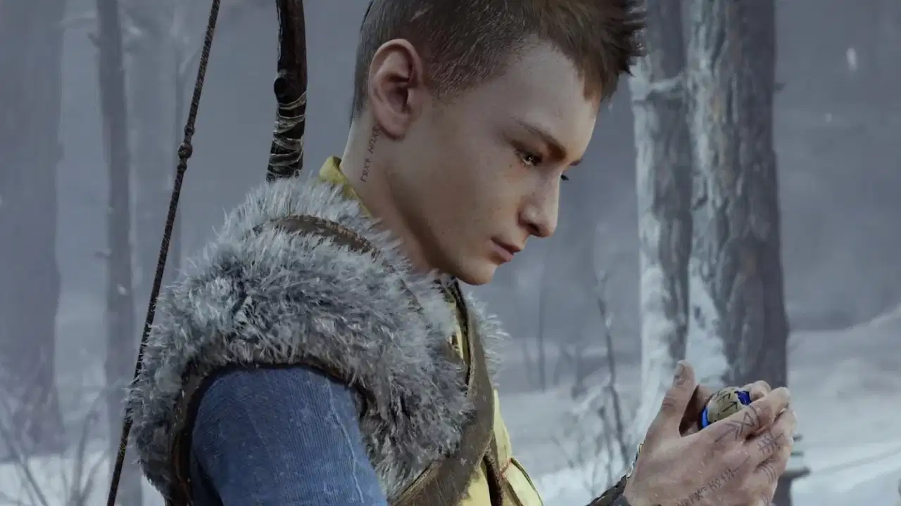
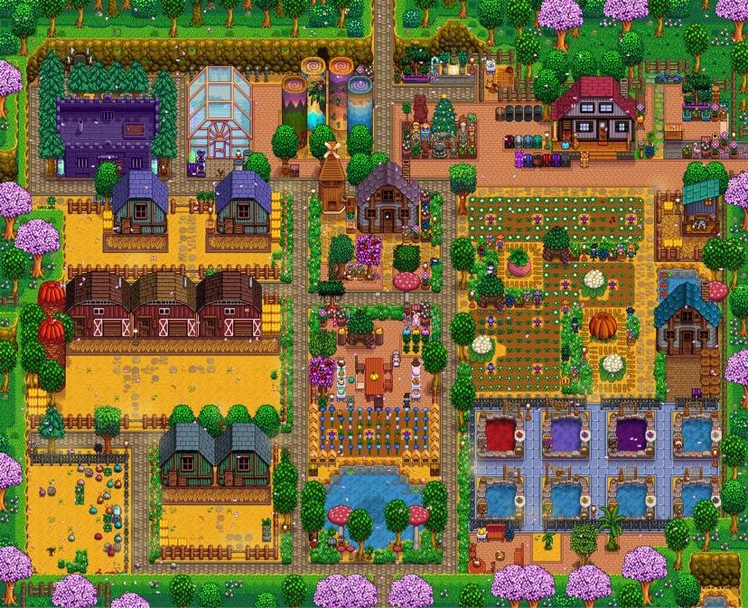
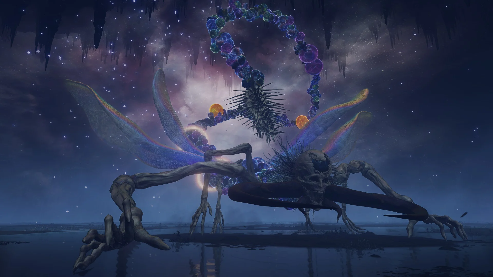
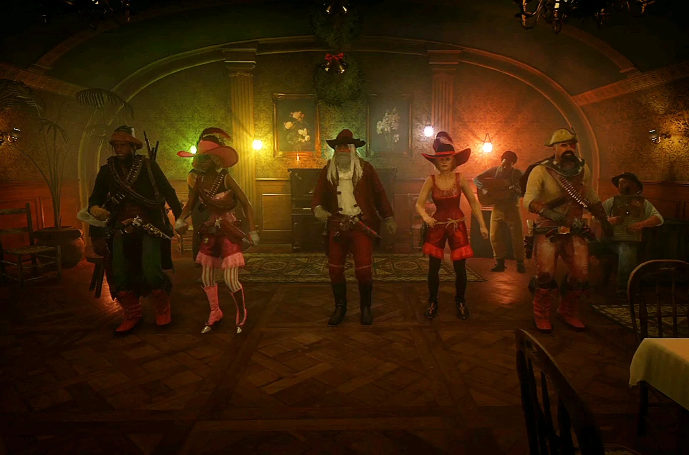

Trending Articles

Skyrim Mod Makes NPCs React to Invisibility

Sons of the Forest Patch 06 Adds New Difficulty Mode

God of War Ragnarok Glitch Turns Atreus Into Hermes
Stardew Valley Player's Lucky Find Ends in Disaster

God of War Ragnarok Glitch Turns Atreus Into Hermes
Latest


Elden Ring Bug Gives Astel a New Move That Breaks the Game
During the mini-boss battle against Astel, Stars of Darkness, an
Elden Ring player discovers a bug that gives the mini-boss a
game-breaking move.
4 Hours Ago

Strange Red Dead Online Glitch Gives Player Bounty for Dancing
A bizarre glitch found in Red Dead Online appears to be giving
players bounties just for daring to dance in front of other
gamers.
6 Hours Ago
Nintendo Fan Makes Possibly the World's Biggest Fully Functional
Wii
A gamer mods one of Nintendo's most revolutionary consoles to make
what could be the biggest fully functional Wii in the world.
7 Hours Ago